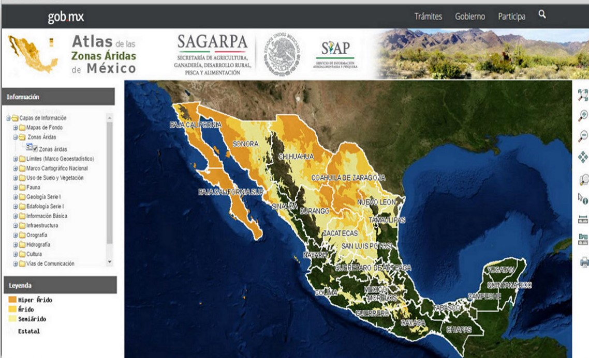
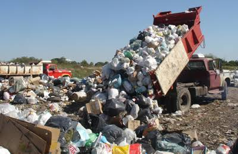
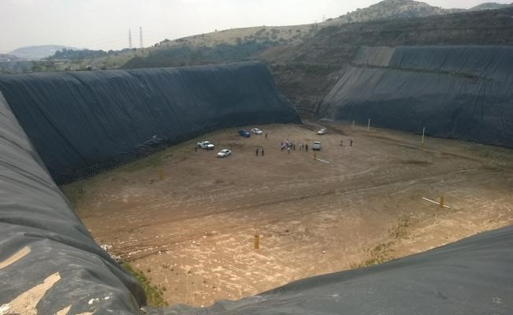
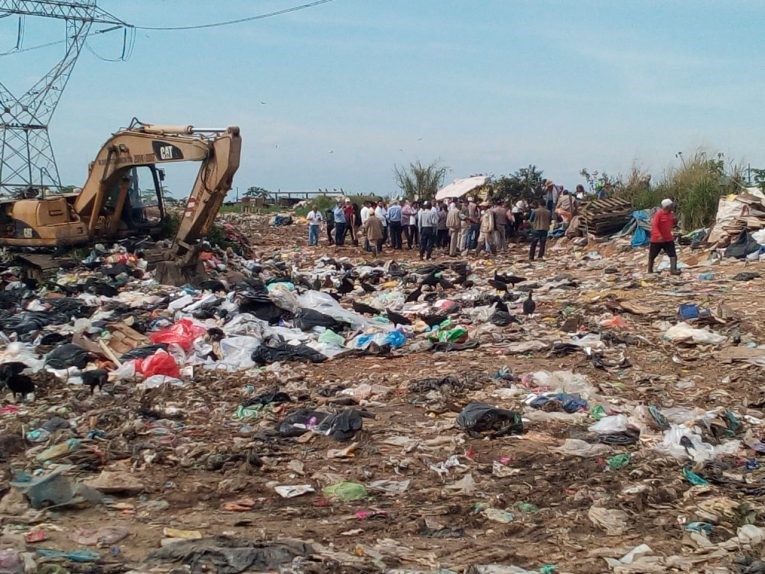
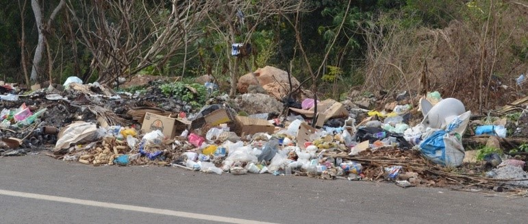

Sistema de Información Geográfica
Se entiende por "Sistema de Información" al conjunto de información con herramientas informáticas, es decir, con programas informáticos o software. Si el objeto concreto de un sistema de información (información + software) es la obtención de datos relacionados con el espacio físico, entonces hablamos de un Sistema de Información Geográfica o SIG (GIS por su acrónimo inglés: Geographic Information Systems).
Es una herramienta que permite la organización, almacenamiento, manipulación, análisis y modelización de datos que están vinculados a la geografía del Estado de Veracruz, el cual se basa en la información que se genera en el quehacer diario del Ayuntamiento de Mérida, así como de diversas fuentes confiables que proporcionan referencias espaciales facilitando la incorporación de aspectos ambientales; y que permite a los usuarios hacer consultas interactivas, localizar sitios, ubicar zonas de riesgo, entre otras acciones.
Dado el dinamismo y la versatilidad de esta herramienta, su contenido es de carácter estrictamente informativo.
Residuos Sólidos Urbanos
Los RSU son los generados en las casas habitación, que resultan de la eliminación de los materiales que utilizan en sus actividades domésticas, de los productos que consumen y de sus envases, embalajes o empaques; los residuos que provienen de cualquier otra actividad dentro de establecimientos o en la vía pública que genere residuos con características domiciliarias, y los resultantes de la limpieza de las vías y lugares públicos, siempre que no sean considerados por esta Ley como residuos de otra índole.
Sitios de Disposición Final
Un sitio de disposición final es el lugar donde se depositan los residuos sólidos urbanos y de manejo especial en forma definitiva (NOM-083, 2015). Es la última etapa del manejo integral de los RSU, por lo que al sitio de disposición final deberán de llegar solo los materiales que no tienen otras posibilidades de ser aprovechados en el reúso, reciclamiento y compostaje (Medina et al., 2005). En México los sitios de disposición final se clasifican en tres tipos:
El relleno sanitario: Obra de infraestructura que involucra métodos y obras de ingeniería para la disposición final de los residuos sólidos urbanos y de manejo especial, con el fin de controlar, a través de la compactación e infraestructura adicional, los impactos ambientales. |
 | |
El sitio controlado: Que cumple con las especificaciones de un relleno sanitario en lo que se refiere a obras de infraestructura y operación, pero se considera inadecuado ya que no cumple con las especificaciones de impermeabilización. |
 | |
El sitio no controlado: También inadecuado ya que no cumple con los requisitos establecidos en la NOM-083. |
 |